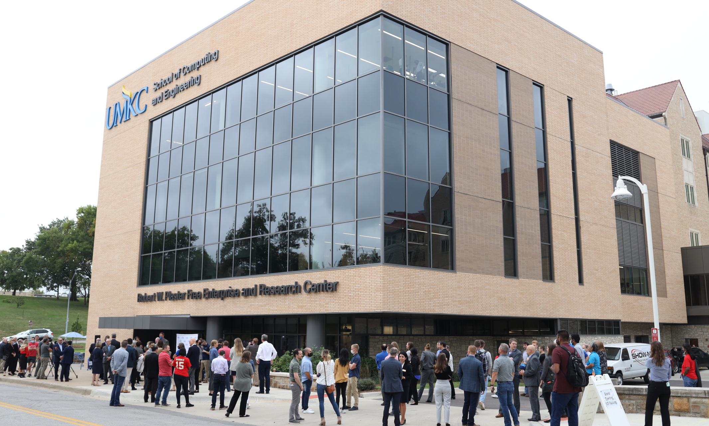
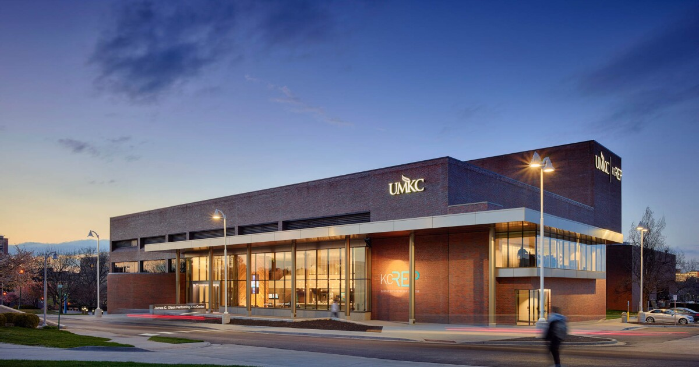
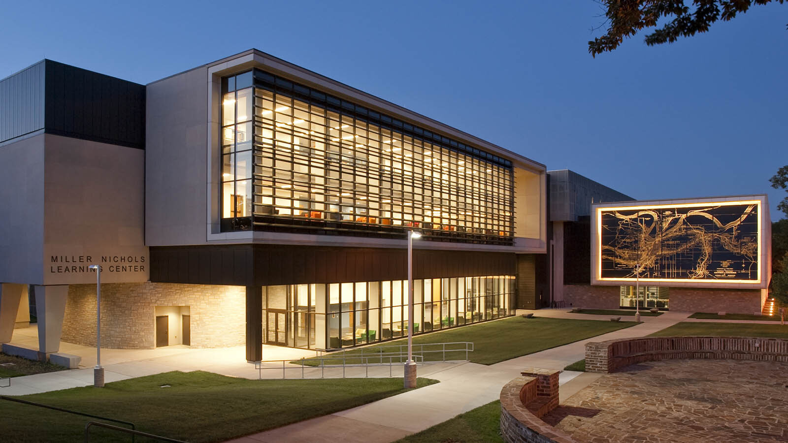

SCE
School of Computer Engineering

UMKC Rep
School at Ease

Swinney
Recreation for All

MNLC
Miller Nicholas Learning Center
School of Computer Engineering
School at Ease
Recreation for All
Miller Nicholas Learning Center
Time and time again, our students tell us their campus visit sealed the deal for them at UMKC. To help you find the experience that's right for you, we offer several ways to visit — in person and virtual.
We know you have countless choices when choosing a college (and after a while, they can all start to look the same). That’s why we created this at-a-glance guide to what makes UMKC different from the rest.
Barbecue restaurants in KC
Division I sports teams on campus
Jobs posted on UMKC career network each year